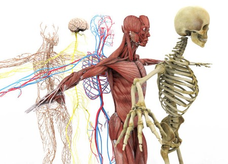

Bom neste artigo te convido a pensar no seu bem mais precioso, claro que de bate pronto
você consegue me responder isso, certo? Então, o que está sempre com você? Participa de todas as suas conquistas e derrotas,
compartilha experiência e cresce (literalmente) junto contigo? Sim, o seu corpo. Corpo na forma figurativa de falar,
pois é englobado a parte física do corpo e a mente. Portanto, quando for falado corpo, ao longo desse artigo,
considere-o como parte integrada e complexa do seu ser.
Se você é um estudante, arquiteto, engenheiro, médico, pedreiro, a procura de um emprego,
professor, entre as milhões de profissões que existem nesse mundão afora, desculpe, este artigo não é para ti.
Porém, se você for uma pessoa, é, pode continuar lendo pois terá informações proveitosas a você.
Pois bem, essa foi fácil, seu corpo é seu bem mais precioso, afinal o seu corpo é seu, suas perfeições e imperfeições, qualidades e defeitos, jeitos e sujeitos e por aí vai, mas eis que te faço uma pergunta, você o trata com devido carinho, respeito e cuidado que ele/você merece?
Pois bem, essa foi fácil, seu corpo é seu bem mais precioso, afinal o seu corpo é seu, suas perfeições e imperfeições, qualidades e defeitos, jeitos e sujeitos e por aí vai, mas eis que te faço uma pergunta, você o trata com devido carinho, respeito e cuidado que ele/você merece?
Dentre os desafios da rotina, nosso ato de matar um leão por dia, em plena pandemia e
bombardeio de informações externas, como está a relação de você com você mesmo? Realiza exercícios regularmente?
Possui uma boa noite de sono? Uma alimentação “legal”? Realiza respirações regradas constantemente? ...
Ufa, eu posso falar mil práticas adequadas que seriam interessantes termos ao longo de nossa rotina para cuidar do nosso corpo, mas tudo isso faz parte de um processo, um objetivo a ser conquistado, afinal, nossa vida é volátil, cada dia é um dia, cada passo é um passo.
Ufa, eu posso falar mil práticas adequadas que seriam interessantes termos ao longo de nossa rotina para cuidar do nosso corpo, mas tudo isso faz parte de um processo, um objetivo a ser conquistado, afinal, nossa vida é volátil, cada dia é um dia, cada passo é um passo.
Sem mais delongas, concordamos que cuidar do nosso corpo parece interessante, portanto, te convido a refletir,
faça uma tabela de como é sua rotina. Nela, coloque quais suas responsabilidades e deveres diários, como está sua alimentação
, quando teve um momento de lazer, quais elementos te deixou fora do seu eixo de plenitude (vulgo “estressado(a)”) e por aí
vai, e no final de semana analise-a, pense, reflita e aja, com essa rotina em mãos, como eu posso melhorar o meu corpo?
As respostas podem ser variadas, desde caminhar uma volta de quarteirão por dia ouvindo Spice Girls,
ou até mesmo reduzir o número de sal que eu coloco na minha omelete, ou aproveitar o nascer do sol com um copo de café,
e claro, realizar exercícios ao longo da semana, entre outras mil práticas.
Com isso, você conseguiu identificar como pode cuidar, mesmo que de forma inicial, do seu corpo, então mãos à obra,
bora começar?
Bom, espero que tenha pensado um pouco nos fatores simples mencionados aqui e que consiga fazer algo em relação a isso,
como foi dito, tudo é um processo e vale ressaltar que nem sempre estaremos dando passadas largas em busca do nosso objetivo,
as vezes, recuar um passo possa ser o certo a se fazer para dar dois passos no futuro.
Eu fico por aqui, comente e divulgue para quem achares que poderá ajudar este artigo e fique
de olho para mais informações e reflexões de como cuidar do nosso bem mais precioso.
COMECE HOJE, O ONTEM PASSOU E O AMANHÃ NUNCA CHEGARÁ.
Voltar